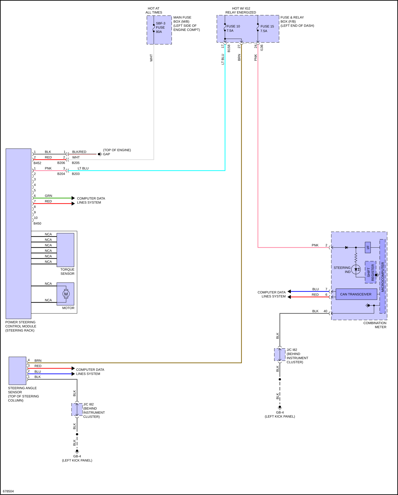

Home
>>
Subaru
>>
2019
>>
Crosstrek Limited
>>
Repair and Diagnosis (Single Page)
>>
Electrical
>>
Wiring Diagrams
>>
System Wiring Diagrams
>>
Electronic Power Steering
Electronic Power Steering
Fig 1: Electronic Power Steering Circuit
